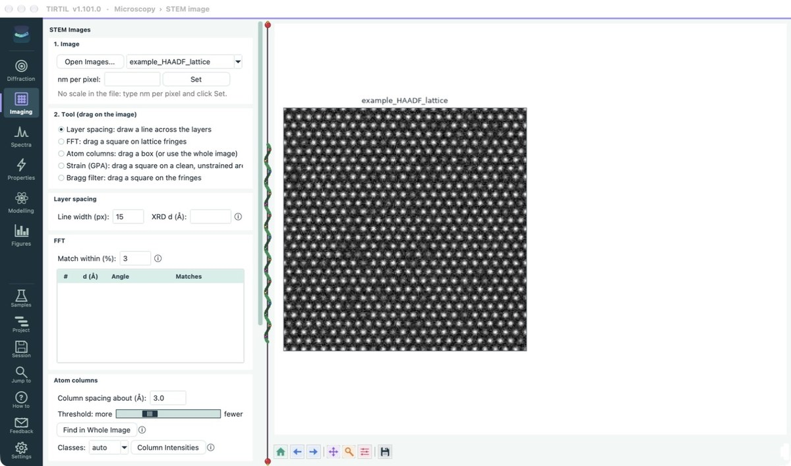
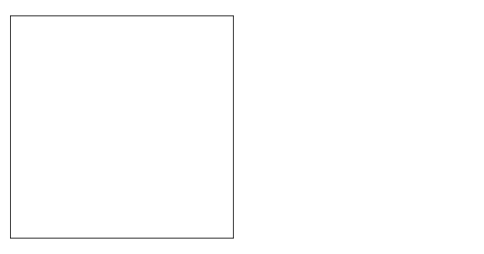

Imaging
STEM image
Atom columns, lattice spacings and strain.

Steps
Open Images...Open HAADF or BF images (.dm3, .dm4, .tif, .emd).Find in Whole ImageThe FFT shows the lattice as spots. Pick two spots for strain mapping.- GPA turns the two spots into strain maps (εxx, εyy, rotation).
Column IntensitiesColumn intensities: a dim class of columns gives a vacancy or lighter-atom fraction.Wiener DenoiseWiener denoise, Bragg filter, or align and average a frame stack for cleaner images.
How it works

Worked example
A spacing of 0.271 nm next to 0.266 nm in the map is (0.271 - 0.266) / 0.266 = 1.9 % local strain.
In TIRTIL: How to (⌘/) › Try It With Example Data loads this example.